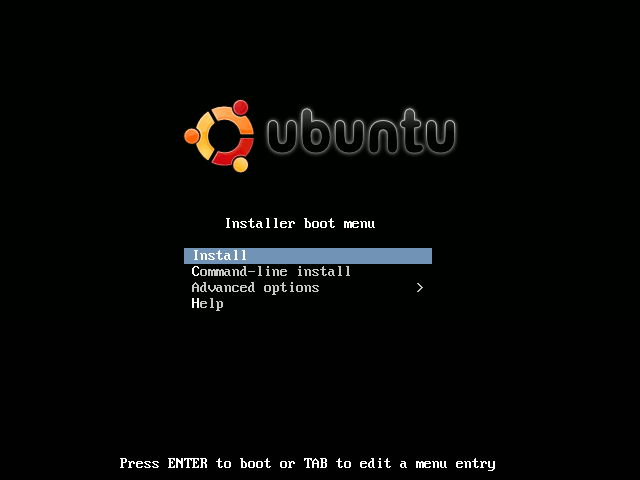
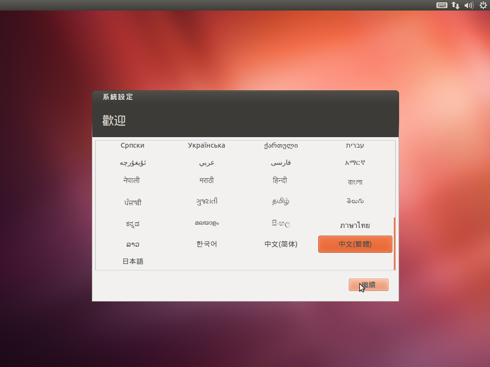
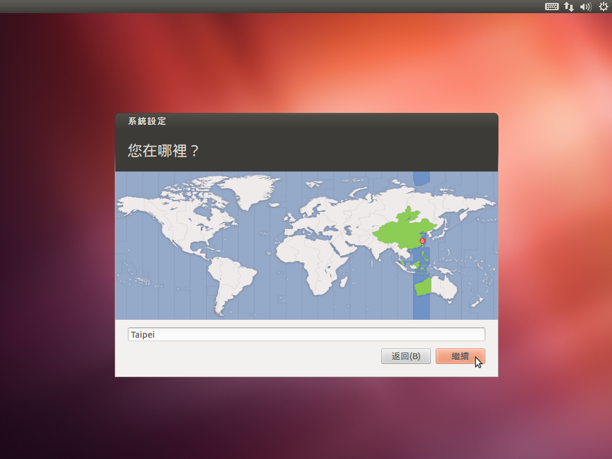
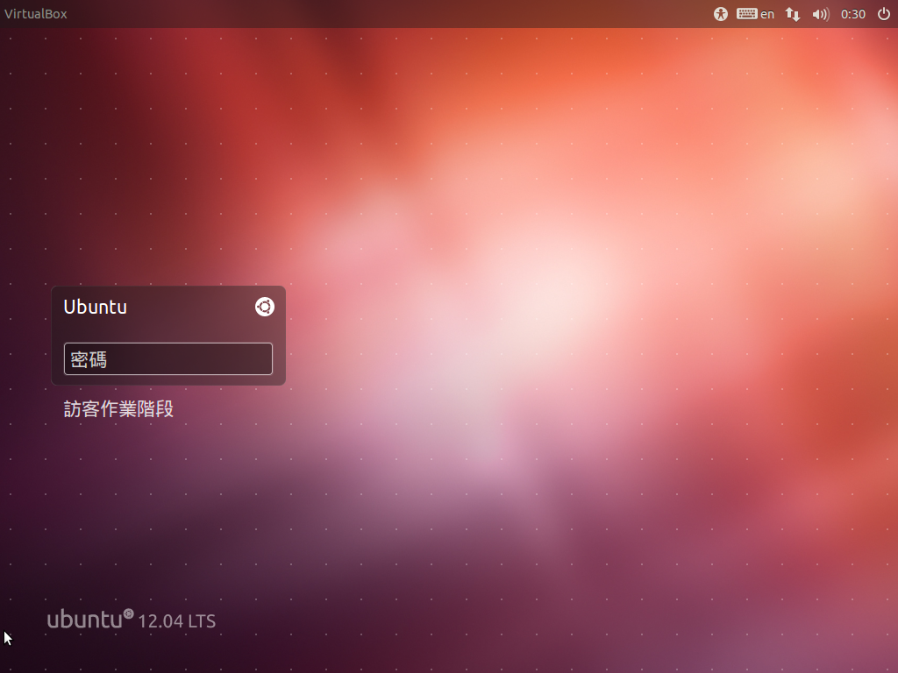

透過網路自動安裝 Ubuntu 12.04.3
- 首先要確定有線網路可以使用 DHCP 自動取得 IP 以及連上 Internet
- 如果是 i386 請到這裡下載 mini.iso，如果是 amd64 請到這裡下載 mini.iso
- 將隨身碟接上有裝 Ubuntu 的電腦，然後執行 `sudo su -c "cat mini.iso > /dev/sdb"`，其中 /dev/sdb 依實際情況調整
- 將隨身碟接上想要安裝 Ubuntu 的電腦，利用 BIOS 開機選單從隨身碟開機

- 按下 Tab 鍵輸入 'auto=true url=fourdollars.github.io netcfg/get_hostname=ubuntu' 後按下 Enter 鍵
- 然後就是放著讓它自己安裝完，最快約40分鐘左右，依網路頻寬跟速度決定，安裝完成後會自動關機。
第一次啟動系統進行初始化設定
- 選擇語言

- 選擇時區

- 選擇鍵盤
- 帳號密碼

- 登入畫面
